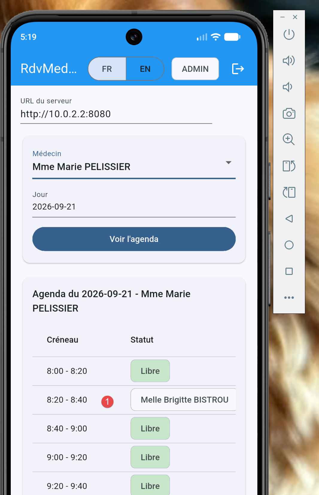

6. Chapter 5 - Porting the Flutter Application to Mobile, Desktop, and the Web
6.1. A Single Source Code, Multiple Compilation Targets
This is the core of this chapter and the raison d’être of this course variant: AUCUNE, as mentioned in Chapter 4 ([lib/], [pubspec.yaml], [assets/]) remains unchanged, regardless of the target selected. “Porting” the application here simply involves choosing a different COMMANDE, DE, or COMPILATION ([flutter run -d <cible>] or [flutter build <cible>])—never to write, duplicate, or adapt any widgets. This is very different from what a port would have required using the tools covered in the rest of this course: a [Vue.js]/[React]/[Angular] only runs NATIVEMENT in a browser—porting it to mobile requires a tool like TIERS ([Cordova]/[Capacitor], not used in this course) that packages it into a native wrapper containing, in reality, an embedded browser (a [WebView]): the code remains unchanged, but it is not a native executable, unlike what is produced here for mobile and desktop (see Chapter 3, “What Flutter Doesn’t Do” (EST PAS)).
The six targets ([Android], [iOS], [macOS], [Windows], [Linux], [web]) are enabled—PAR, DÉFAUT—in any project created with [flutter create] since [Flutter 3] (see Chapter 1) - No configuration is required on the project side to add one. The only differences from one target to another are: the native compilation tools installed on the development machine ([Xcode], [Visual Studio], [GTK]...), the exact command executed, and—for mobile only—a detailed network configuration described later in this chapter.
6.2. Web target
The target already used in Chapter 2 ([flutter run -d chrome]). Two commands are sufficient:
[flutter build web] generates a standalone [build/web/] file ([index.html], [JavaScript], or [WebAssembly] compiled, resources) - to be deployed on a static web server (IMPORTE, QUEL, [Nginx], [Apache], a simple [npx serve]....), exactly like the [dist/] file generated by [npm run build] on the [Vue.js]/[Vite] side. This build remains a [JavaScript] file served by a browser: it therefore continues to depend on a [NestJS] JOIGNABLE server from that browser, and thus on [app.enableCors()] (see [src/main.ts] on the server)—which is already active, with no changes required on the server side for this target.
One point to note specific to this target: the “URL on the server” field on the login screen (see [_ServerUrlField] in [lib/app.dart], Chapter 4) must then point to a ATTEIGNABLE address from the browser running the application—[http://localhost:8080] is acceptable as long as the [NestJS] server is running on the same MÊME machine as the browser.
6.3. Desktop Target
Three operating systems, three sets of native prerequisite tools (see Chapter 1), but [flutter] commands that are identical in form:
Each [flutter build <cible>] command produces a native executable AUTONOME ([.app] on macOS, [.exe] + its libraries on Windows, a [ELF] binary on Linux), in [build/<cible>/]—an executable that, unlike the web build, does not run in a browser, but rather on AUCUNE and [WebView]: this is native code running directly on the operating system, with its own window and title bar, managed by [Flutter] itself.
This target does not require any special network configuration for AUCUN: a desktop application runs on the same machine as the user and accesses [http://localhost:8080] exactly as any other program installed on that machine would (the “URL server” field on the login screen allows you, as with other targets, to point to a remote server if necessary).
PS C:\Data\st-2026\dev\flutter-nestjs-sept-2026\rdvmedecins_flutter_client> flutter devices
Found 4 connected devices:
sdk gphone16k x86 64 (mobile) • emulator-5554 • android-x64 • Android 17 (API 37) (emulator)
Windows (desktop) • windows • windows-x64 • Microsoft Windows [version
10.0.26200.9457]
Chrome (web) • chrome • web-javascript • Google Chrome 153.0.8010.48
Edge (web) • edge • web-javascript • Microsoft Edge 153.0.4234.48
Run "flutter emulators" to list and start any available device emulators.
If you expected another device to be detected, please run "flutter doctor" to diagnose potential issues. You
may also try increasing the time to wait for connected devices with the "--device-timeout" flag. Visit
https://flutter.dev/setup/ for troubleshooting tips.
PS C:\Data\st-2026\dev\flutter-nestjs-sept-2026\rdvmedecins_flutter_client> flutter run -d windows
This produces the following result:

The screen above is not from a browser but from a Windows application. For this to work, certain tools must be available:
- Line 2: Visual Studio must be installed;
To get a clear picture of what’s missing from your Flutter project, type the following command:
6.4. Target emulators
The Flutter app has been tested on an Android emulator:
PS C:\Data\st-2026\dev\flutter-nestjs-sept-2026\rdvmedecins_flutter_client> flutter devices
Found 4 connected devices:
sdk gphone16k x86 64 (mobile) • emulator-5554 • android-x64 • Android 17 (API 37) (emulator)
Windows (desktop) • windows • windows-x64 • Microsoft Windows [version
10.0.26200.9457]
Chrome (web) • chrome • web-javascript • Google Chrome 153.0.8010.48
Edge (web) • edge • web-javascript • Microsoft Edge 153.0.4234.48
...
PS C:\Data\st-2026\dev\flutter-nestjs-sept-2026\rdvmedecins_flutter_client> flutter run -d emulator-554
The result in the emulator:

- Note the difference between URL and [1];
Logging in with admin / admin yields the following result:

Fill out the form and then submit:

Above is the time slot we reserved using the web app.
6.5. Mobile Target
Note: The reviewer has not tested this section.
This is the area that requires the most attention, due to a detail specific to the emulator/simulator network.
6.5.1. The mobile-specific network pitfall: localhost no longer refers to the development environment PC
It is LE—an important detail to know for this target, unrelated to [Flutter] itself: [localhost] (or [127.0.0.1]), in the “Server” field of the login screen, refers to the machine running the code - or a mobile emulator/simulator is a machine (VIRTUELLE, DISTINCTE) on the development machine where the server ([NestJS]) is running, even if the two appear to “be on the same computer.”
- [Android] Emulator (created by [Android Studio]): Use [http://10.0.2.2:8080]—a special address specific to the official [Android] emulator, which automatically redirects to [localhost] on the host machine (the development version, PC).
- [iOS] Simulator (macOS only): [http://localhost:8080] runs directly, while the [iOS] simulator shares the host machine’s network (unlike the [Android] emulator).
- Physical device ([Android] or [iOS], connected to the same Wi-Fi network as the development device PC): Use the address [IP] or LOCALE for this PC on this network (for example, [http://192.168.1.42:8080]), never [localhost] or [10.0.2.2], as both refer to the mobile device itself in this case.
6.5.2. Two additional restrictions specific to the mobile device
- [Android] (since API 28) blocks by default all unencrypted traffic from [HTTP], EN, and CLAIR (unencrypted [https://])—since the server for this course listens on [HTTP] in simple mode, an application [Android] PRÊTE POUR LA PRODUCTION should throw an explicit exception ([android:usesCleartextTraffic="true"] in the generated manifest [Android], or a more granular network security configuration)—a native configuration setting, in [android/], outside the [Dart] code presented in this document.
- [iOS] enforces a comparable policy, [App Transport Security] ([ATS]), which also blocks plaintext [HTTP] by default—an equivalent exception is declared in [ios/Runner/Info.plist] ([NSAppTransportSecurity], [NSAllowsArbitraryLoads], or, more specifically, an exception targeted solely at the development server’s domain).
These two settings do not apply to QUE for development/demonstration with an unencrypted [HTTP] server, such as the one used in this course—a real production deployment would instead expose the [NestJS] server itself in [https://] (for example, behind a [reverse proxy] as [Nginx]), which would render these two exceptions unnecessary.
6.5.3. A Narrower Screen: The Layout Trap
One final difference specific to mobile devices has nothing to do with the network: a phone in portrait orientation is only about 360 pixels wide (in logical pixels of [Flutter]), compared to several hundred more in a browser or desktop window. A screen designed for a large display can therefore become unusable on a phone: this is what happened to the first version of this document’s client, tested on a [Android] emulator. The doctor/day/button selector ([doctor_day_picker.dart]) aligned three fields within a single [Row], and the title bar ([app.dart]) displayed everything at once: the emulator had to be switched to landscape mode to see everything. Chapter 4 shows the fix. Two rules follow from this:
- Never assume a width. To choose a layout, check the actual available width—either at a specific location in the tree using [LayoutBuilder] ([contraintes.maxWidth]), or for the entire screen with [MediaQuery.sizeOf(context).width]—then choose [Row] (wide screen) or [Column] (narrow screen).
- Test early on a narrow screen: use the emulator in portrait mode, or a [Chrome] window that you resize to be narrower. In debug mode, [Flutter] indicates that the content is too wide with a yellow and black banner reading “RIGHT OVERFLOWED BY … PIXELS” in the application, as well as a message in the console.
This does not contradict the following observation: the layout adapts based on the screen's TAILLE, never the platform—no [if (kIsWeb)] appears. Minimizing a browser or desktop window triggers exactly the same “narrow” layout as a phone does.
6.6. Summary Table
- [web] — [flutter run -d chrome] / [flutter build web] — compiled to [JavaScript]/[WebAssembly], executed by a browser — URL server: [localhost] (same machine).
- [bureau] (macOS/Windows/Linux) — [flutter run -d <os>] / [flutter build <os>] — native compilation of [AOT], standalone executable — URL server: [localhost] (same machine).
- [mobile] (Android emulator) — [flutter run] — native compilation of [AOT] — URL server: [10.0.2.2] (special address for the emulator).
- [mobile] (iOS simulator) — [flutter run] — native compilation [AOT] — URL server: [localhost] (network shared with the host).
- [mobile] (physical device) — [flutter run] — native build [AOT] — URL server: local address [IP] of the development environment PC, + exception [cleartext]/[ATS].
6.7. What NE changes in the Dart code compared to PAS
To conclude this chapter, it is worth emphasizing what did not need to be written or adapted to cover these three target families: no conditions appear in Chapter 4, no separate files, and no additional abstraction libraries. The few choices already made in Chapter 4 are sufficient, on their own, to make this code portable across the three target families: [shared_preferences] (rather than [localStorage], which is browser-specific) for persistence, [rootBundle.loadString(...)] (rather than a [fetch] to a web server) for embedded translation dictionaries, and the [http] package (rather than a browser-specific API) for networking. This is exactly what the introduction to this document promised: [un seul code Flutter suffit pour créer une application mobile, une application de bureau et une application web].